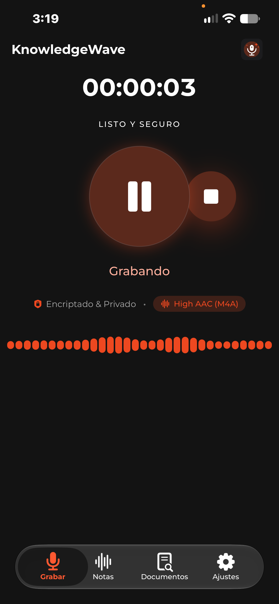
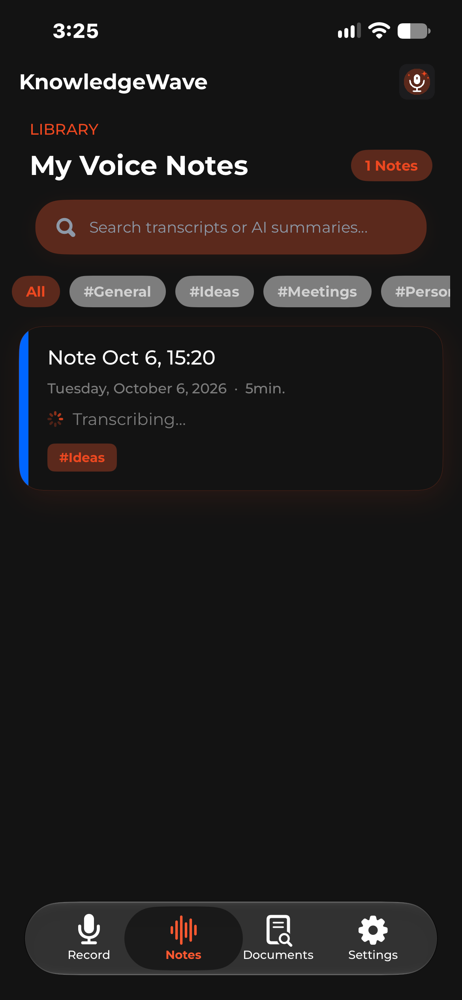
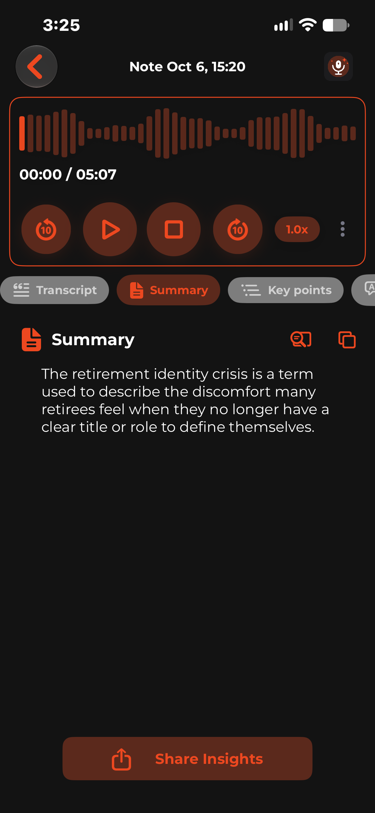
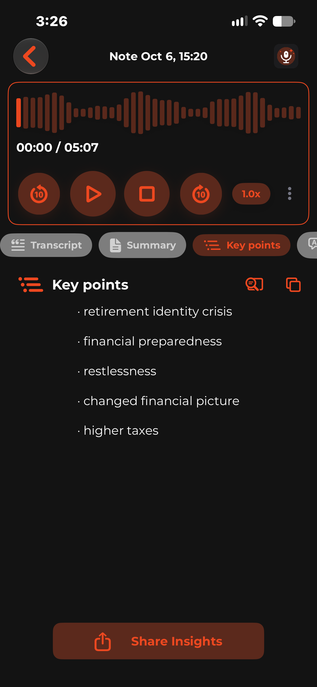
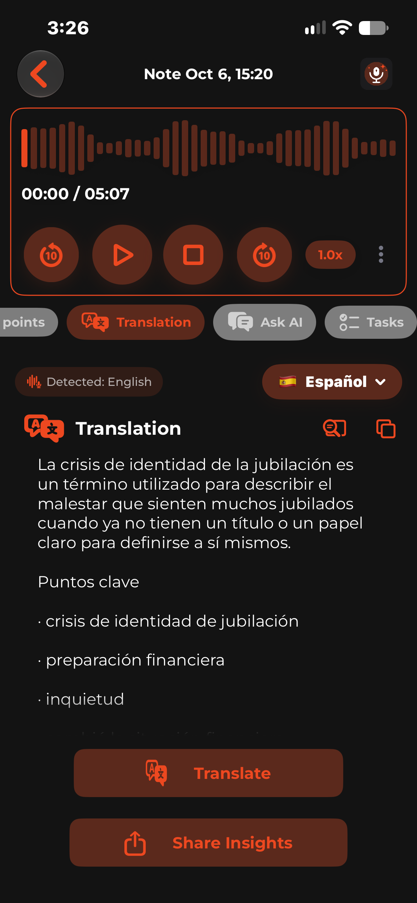
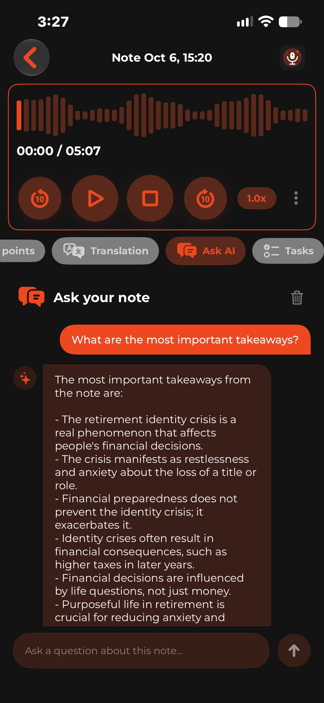
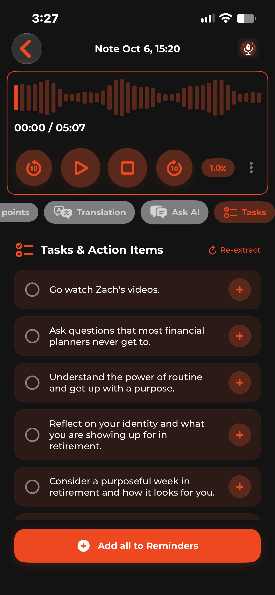
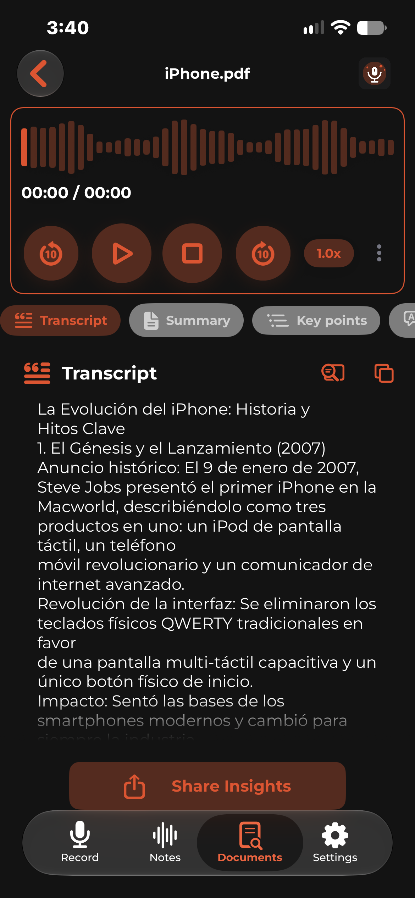

Tus reuniones, notas y lecturas con Inteligencia Artificial Local
KnowledgeWave graba, transcribe y analiza tus ideas y documentos directamente en tu iPhone. Sin servidores externos, sin suscripciones a la nube y con máxima confidencialidad.
Potencia de escritorio en tu bolsillo
Máxima velocidad de procesamiento, respuesta inmediata y bajo consumo de batería directamente en tu iPhone.
Transcripción Offline con Whisper
Convierte horas de audio en texto con altísima fidelidad y soporte multilingüe sin necesitar conexión a internet.
Resúmenes e Insights con Inteligencia Artificial
Genera resúmenes ejecutivos, extrae puntos clave estructurados y obtén respuestas rápidas procesadas 100% en la memoria de tu dispositivo.
Document Hub & Lector Inteligente
Importa documentos PDF o Word. Extrae su contenido, genera resúmenes automáticos y disfruta de una lectura fluida estilo e-reader.
Escucha tus Notas con Voz Natural
Text-to-Speech nativo con modulación de velocidad de hasta 3.0x y detección automática de idioma para estudiar o repasar en movimiento.
Exportación a Recordatorios de Apple
La IA detecta compromisos y tareas pendientes en tus reuniones y te permite enviarlos a Apple Reminders con un solo toque.
Conversa con tus Notas
Hazle preguntas a tus grabaciones y documentos sobre acuerdos, cifras o dudas específicas con respuestas contextuales al instante.
Diseñado exclusivamente para iOS
Una experiencia rápida, elegante y diseñada para sentirse como en casa en tu iPhone.

Grabación Hi-Fi
Captura nítida con visualizador de ondas y cancelación de ruido.

Biblioteca Organizada
Búsqueda instantánea, categorías y estado de transcripción.
Transcripción Completa
Texto exacto sincronizado con controles de reproducción.

Resúmenes Ejecutivos
La esencia de tu reunión o clase sintetizada al instante.

Puntos Clave Estructurados
Ideas centrales ordenadas con viñetas claras.

Traducción Multilingüe
Detección inteligente y traducción local en el dispositivo.

Pregúntale a tu Nota
Chat interactivo con IA para aclarar dudas de tu contenido.

Extracción de Tareas
Detección de compromisos y envío directo a Recordatorios.

Document Hub
Importación, lectura y análisis de PDFs o documentos Word.
Todo lo que necesitas saber
Transparencia absoluta sobre la privacidad, el funcionamiento y la tecnología de KnowledgeWave.
Tus datos nunca salen de tu iPhone
A diferencia de otras soluciones, KnowledgeWave no transmite tus grabaciones de voz, transcripciones ni documentos a servidores externos. Todo el cómputo de IA ocurre localmente en tu procesador Apple Silicon.
Leer Política de Privacidad Completa →